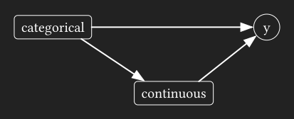
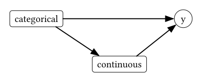
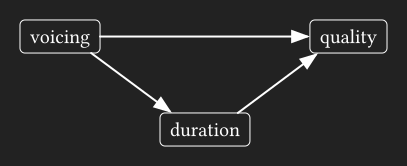
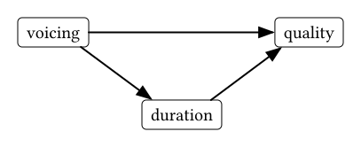
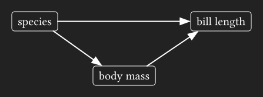
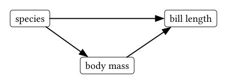

![]()
I’ve been noodling over things related to causal inference for a bit now, like DAGs, adjustment sets, marginal effect etc. One thing I hadn’t fully appreciated before is how your choice to estimate direct effects will make your model predictions very sensitive to the kind of prediction grid you use. The rest of this post is just me working through these complications step-by-step.
The kind of DAG
A relatively common kind of causal DAG that (implicitly) comes up in linguistics involves some kind of categorical predictor that has an effect on another continuous predictor.


For example:
- following consonant voicing has an effect on vowel duration
- vowel duration has an effect on vowel quality
- following consonant voicing also has an effect on vowel quality


With causal relationships like this, people often ask something like
Is there really an effect of consonant voicing on vowel quality, or is there just an effect of vowel duration?
This is a question about the direct effect of voicing on vowel quality. If we set up the dag and check what adjustment variables we need to include to estimate the direct effect of voicing, we’ll see that we need to include duration in the model.
voicing_dag <- ggdag::dagify(
quality ~ voicing + duration,
duration ~ voicing
)
dagitty::adjustmentSets(
voicing_dag,
outcome = "quality",
exposure = "voicing",
effect = "direct"
) { duration }But, if we wanted to estimate the total effect of voicing on vowel quality, we shouldn’t include duration.
dagitty::adjustmentSets(
voicing_dag,
outcome = "quality",
exposure = "voicing",
effect = "total"
) This difference between direct and total effects feels a bit abstract sometimes. I’m going to walk through a little example using the penguins dataset, with a focus for how we should approach getting model predictions.
Data setup
The causal relationships I’ll look at in the penguins data set are:
- species has an effect on body mass
- body mass has an effect on bill length
- species also has an effect on bill length


If we look at the effect of species on both bill length and body mass, we can see a clear effect for both:
Plotting code
penguins |>
select(
species, body_mass, bill_len
) |>
drop_na() |>
pivot_longer(
body_mass:bill_len,
names_to = "measure"
) |>
ggplot(
aes(species, value)
)+
stat_dots(
side = "both"
) +
facet_wrap(
~measure,
scales = "free_y"
) +
labs(y = NULL) -> p
p
p+theme_darkmode(){kind=link}
{kind=link}
And if we look at the effect of body mass on bill length, we can see another very clear effect.
Plotting code
penguins |>
ggplot(
aes(body_mass, bill_len, color = species)
) +
geom_point() +
guides(
color = "none"
)-> p
p +
stat_ellipse(
geom = "labelpath",
aes(label = species),
hjust = 0,
label.padding = 0.01,
show.legend = F
)
p +
stat_ellipse(
geom = "labelpath",
aes(label = species),
hjust = 0,
label.padding = 0.01,
fill = plot_bg,
show.legend = F
) +
theme_darkmode(){kind=link}
{kind=link}
Let’s, really quick, get the mean and standard error of bill length by species.
| species | estimate | conf.low | conf.high |
|---|---|---|---|
| Adelie | 38.8 | 38.4 | 39.2 |
| Gentoo | 47.5 | 47 | 48 |
| Chinstrap | 48.8 | 48 | 49.6 |
I’ll call these quantities \(\bar{Y}\) with a superscript for each species.
\[ \begin{aligned} \bar{Y}^a\\ \bar{Y}^c\\ \bar{Y}^g \end{aligned} \]
Here they are plotted over the data:
Plotting code
{kind=link}
{kind=link}
One way to estimate the effect of species on bill length would be to subtract these means from eachother.
\[ \begin{aligned} \bar{Y}^c - \bar{Y}^a\\ \bar{Y}^g - \bar{Y}^a \end{aligned} \]
Table code
mean_est |>
select(
species,
estimate
) |>
pivot_wider(
names_from = species,
values_from = estimate
) |>
mutate(
Chinstrap - Adelie,
Gentoo - Adelie
)|>
select(
matches("-")
) |>
pivot_longer(
everything(),
names_to = "contrast",
values_to = "estimate"
) |>
mutate(method = "mean") ->
mean_comparisons
mean_comparisons |>
select(-method) |>
tt()| contrast | estimate |
|---|---|
| Chinstrap - Adelie | 10.04 |
| Gentoo - Adelie | 8.71 |
If we look at these differences in means, and consider the scatterplot of body mass vs bill length, we might wonder whether the difference between Gentoo and Adelie is really that large. Maybe Gentoo penguins are just larger overall, with proportionally longer bills. That’s where estimating the direct effect comes in.
Fitting a model
A simple linear model will do the trick:
bill_model <- lm(
bill_len ~ body_mass + species,
data = penguin_full
)And if we look at the estimated effect of species:
Table code
tidy(
bill_model
) |>
filter(
str_detect(
term, "species"
)
) |>
select(term, estimate) |>
tt()| term | estimate |
|---|---|
| speciesChinstrap | 9.92 |
| speciesGentoo | 3.56 |
The estimated difference between Gentoo and Adelie is, in fact, about half as much as the comparison of means suggested.
Getting Predictions
Here’s where things start getting a little tricky, and we need to take some care in how we get and think about predicted values.
Average Predictions
The function avg_predictions() will calculate the predicted unit level bill length, then average over species. Here, \(S\) stands for the species variable, and \(M\) stands form the body mass variable.
\[ \begin{aligned} E[Y_i^a | S=a, M_i]\\ E[Y_i^c | S=c, M_i]\\ E[Y_i^g | S=g, M_i]\\ \end{aligned} \]
avg_predictions(
bill_model,
by = "species"
) |>
mutate(method = "pred_avg") ->
avg_pred| species | estimate | conf.low | conf.high |
|---|---|---|---|
| Adelie | 38.8 | 38.4 | 39.2 |
| Chinstrap | 48.8 | 48.3 | 49.4 |
| Gentoo | 47.5 | 47.1 | 47.9 |
We can visually compare these average predictions to the mean and standard errors we estimated above:
Plotting code
bind_rows(
mean_est,
avg_pred
) |>
ggplot(
aes(species, estimate)
) +
geom_dots(
data = penguin_full,
aes(x = species, y = bill_len),
side = "both"
) +
geom_pointinterval(
size = 5,
aes(
ymin = conf.low,
ymax = conf.high,
color = method
),
position = position_dodge(width = 0.2)
) ->
p
p
p+theme_darkmode(){kind=link}
{kind=link}
Predictions at representative values
To get predictions at representative values, we can use the datagrid() function. If we just pass the model to datagrid() and no other arguments, it will give us back a 1 row data frame where every column is either the average value across the original data, or the most frequent level.
To get a prediction for each species, I’ll pass a vector of species names to species.
| rowid | bill_len | body_mass | species |
|---|---|---|---|
| 1 | 43.9 | 4202 | Adelie |
| 2 | 43.9 | 4202 | Chinstrap |
| 3 | 43.9 | 4202 | Gentoo |
We can describe the predictions we get as the expected bill length for each species, conditional on the average body mass.
\[ \begin{aligned} E[Y^a | S=a, \bar{M}] \\ E[Y^c | S=c, \bar{M}] \\ E[Y^g | S=g, \bar{M}] \end{aligned} \]
predictions(
bill_model,
newdata = grid1
) |>
mutate(method = "pred_grid1")->
species_predIf we compare these predicted values to the previous estimates, they’re very different!
Plotting code
bind_rows(
mean_est,
avg_pred,
species_pred
) |>
ggplot(
aes(species, estimate)
) +
geom_dots(
data = penguin_full,
aes(x = species, y = bill_len),
side = "both"
) +
geom_pointinterval(
size = 5,
aes(
ymin = conf.low,
ymax = conf.high,
color = method
),
position = position_dodge(width = 0.3)
) ->
p
p
p + theme_darkmode(){kind=link}
{kind=link}
The predicted bill length for each species, especially Gentoo, don’t look like typical bill lengths for each species. But that’s because these predictions were conditional on the average body mass across all individuals, which isn’t a representatuve body mass for any individual species.
Plotting code
bill_model |>
predictions(
newdata = datagrid(
species = unique,
body_mass = range
)
)->
full_est
bolden <- \(x){
str_glue("<b>{x}</b>")
}
penguin_full |>
ggplot(
aes(body_mass, bill_len, color = species)
) +
geom_point(
size = 0.2,
alpha = 0.5
) +
geom_textline(
data = full_est,
aes(x = body_mass, y = estimate, label = bolden(species)),
hjust= 0.7,
rich = T
)+
geom_vline(
xintercept = mean(penguin_full$body_mass)
) +
geom_point(
data = species_pred,
aes(y = estimate)
) +
guides(
color = "none"
) -> p
p
p + theme_darkmode(){kind=link}
{kind=link}
Another prediction grid
Instead of setting body_mass to the mean across all penguins, let’s instead set it to the mean within each species. We can do that with datagrid() by passing it by = "species".
| rowid | bill_len | body_mass | species |
|---|---|---|---|
| 1 | 38.8 | 3701 | Adelie |
| 2 | 48.8 | 3733 | Chinstrap |
| 3 | 47.5 | 5076 | Gentoo |
Using this prediction grid, we could describe the preditions as:
\[ \begin{aligned} E[Y^a | S=a, \bar{M}^a] \\ E[Y^c | S=c, \bar{M}^c] \\ E[Y^g | S=g, \bar{M}^g] \end{aligned} \]
predictions(
bill_model,
newdata = grid2
) |>
mutate(
method = "pred_grid2"
)->
typical_predComparing these predictions to estimates we had before, we can see they’re more in-line with what we expect the typical bill lengths to be for each species.
Plotting code
bind_rows(
mean_est,
avg_pred,
species_pred,
typical_pred
) |>
ggplot(
aes(species, estimate)
) +
geom_dots(
data = penguin_full,
aes(x = species, y = bill_len),
side = "both"
) +
geom_pointinterval(
size = 5,
aes(
ymin = conf.low,
ymax = conf.high,
color = method
),
position = position_dodge(width = 0.4)
) ->
p
p
p + theme_darkmode(){kind=link}
{kind=link}
The reason we’ve got predictions that are more in line with what is typical for each species is because we’ve evaluated the model at body masses that are more in line with what is typical for each species.
Plotting code
penguin_full |>
ggplot(
aes(body_mass, bill_len, color = species)
) +
geom_point(
size = 0.2,
alpha = 0.5
) +
geom_textline(
data = full_est,
aes(x = body_mass, y = estimate, label = bolden(species)),
hjust= 0.9,
rich = T
) +
geom_segment(
data = typical_pred,
aes(
x = body_mass,
xend = body_mass,
y = estimate
),
yend = -Inf
) +
geom_point(
data = typical_pred,
aes(
x = body_mass,
y = estimate
)
) +
guides(
color = "none"
) ->
p
p
p + theme_darkmode(){kind=link}
{kind=link}
Comparisons
We can get the Average Treatment Effect of species by calculating how different each individual’s bill length is predicted to be if we swapped its species.
\[ \begin{aligned} E[Y_i^c - Y_i^a | M_i]\\ E[Y_i^g - Y_i^a | M_i]\\ \end{aligned} \]
avg_comparisons(
bill_model,
variables = "species"
) ->
avg_comp| contrast | estimate |
|---|---|
| Chinstrap - Adelie | 9.92 |
| Gentoo - Adelie | 3.56 |
But, again, it’s important that these contrasts are conditional on the body mass of each penguin. So, if you had an Adelie and a Gentoo with the same body mass, the Gentoo would have a bill length about 3.5 mm longer. But, not that many Adelie and Gentoo penguins have the same body mass!
Plotting code
penguin_full |>
ggplot(
aes(body_mass)
) +
geom_dots(
aes(
fill = species,
color = species,
order = species
),
group = 1
) +
scale_y_continuous(
expand = expansion(0)
) ->
p
p + theme_no_y() +
theme_sub_legend(
position = "inside",
position.inside = c(0.85,0.8)
)
p + theme_darkmode() + theme_no_y() +
theme_sub_legend(
position = "inside",
position.inside = c(0.85,0.8)
){kind=link}
{kind=link}
So, if you picked a random Adelie and a random Gentoo, the best estimate of the difference in their bill size (the direct effect) would be larger! One way we could estimate the typical difference between Gentoo and Adelie is to calculate every pairwise difference between individual penguins.
Plotting code
tibble(
diff = as.vector(diff_mat)
) |>
ggplot(
aes(diff)
) +
stat_dots()+
geom_vline(
xintercept = mean(diff_mat)
) +
scale_y_continuous(
expand = expansion(0)
) +
labs(
x = "Gentoo - Adelie"
) ->
p
p + theme_no_y()
p + theme_darkmode() + theme_no_y(){kind=link}
{kind=link}
Almost every Gentoo has a longer beak than every Adelie. And the average of these pairwise comparisons is the total effect of species on bill length.
mean(diff_mat)[1] 8.713487The Upshot
To be honest, I’m not 100% sure what the upshot here is. Let’s imagine a case where following consonant voicing only had an indirect effect on vowel quality via vowel duration. It would be an interesting result to find that after adjusting for duration, the effect of voicing is effectively 0. But estimating and plotting model predictions that show no difference between voicing contexts would be strange, since voicing contexts also systematically differ in terms of duration. You’d effectively be plotting predicted values of very atypical cases.
You could try plotting both kinds of predictions… but I’m already dreading the kind of tortured prose involved in describing the different kinds of predictions to readers.
Reuse
Citation
@online{fruehwald2026,
author = {Fruehwald, Josef},
title = {Getting Predictions When Estimating Direct Vs Total Effects.},
series = {Væl Space},
date = {2026-05-15},
url = {https://jofrhwld.github.io/blog/posts/2026/05/2026-05-15_total-vs-direct-predictions/},
doi = {10.59350/rps04-6zc41},
langid = {en}
}